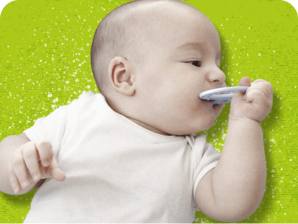
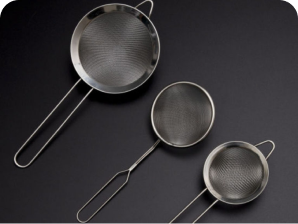
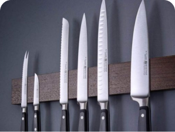
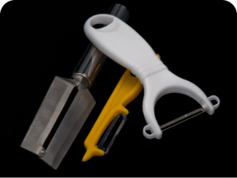

-

Baby Carriers
Your little one was carried for 9 long months in the womb. While that may sometimes have been a challenge for the person doing...
-

Baby Diapers
Diaper changing might seem complicated at first. But with a little practice, you'll find that keeping your baby clean and dry is easy.
-

Baby Skin Care
Your newborn's skin is so sensitive. Don't worry - rashes are common during baby's first year. Learn how to keep your baby's skin...
-

Bottle Feeding
The practice of feeding an infant a substitute for breast milk. Pediatricians generally advise exclusively...
-
Baby Monitors
Electronic device consisting of a one-way radio or video transmitter with a portable receiver for remotely listening to or observing...
-

Baby Teethers
A teether, teething toy, or chew toy is a device given to teething infants. Most modern teethers are silicone, but can also...
-

Food Stainers
A kitchen device that is most used to strain liquids away from other ingredients but also to ocassionally sift fine ingredients...
-

Kitchen Knives
A kitchen knife is any knife that is intended to be used in food preparation. ... Kitchen knives can be made from several different materials.
-

peelers
A peeler is a kitchen tool consisting of a metal blade with a slot with a sharp edge attached to a handle, used to remove...
Kitchen tools